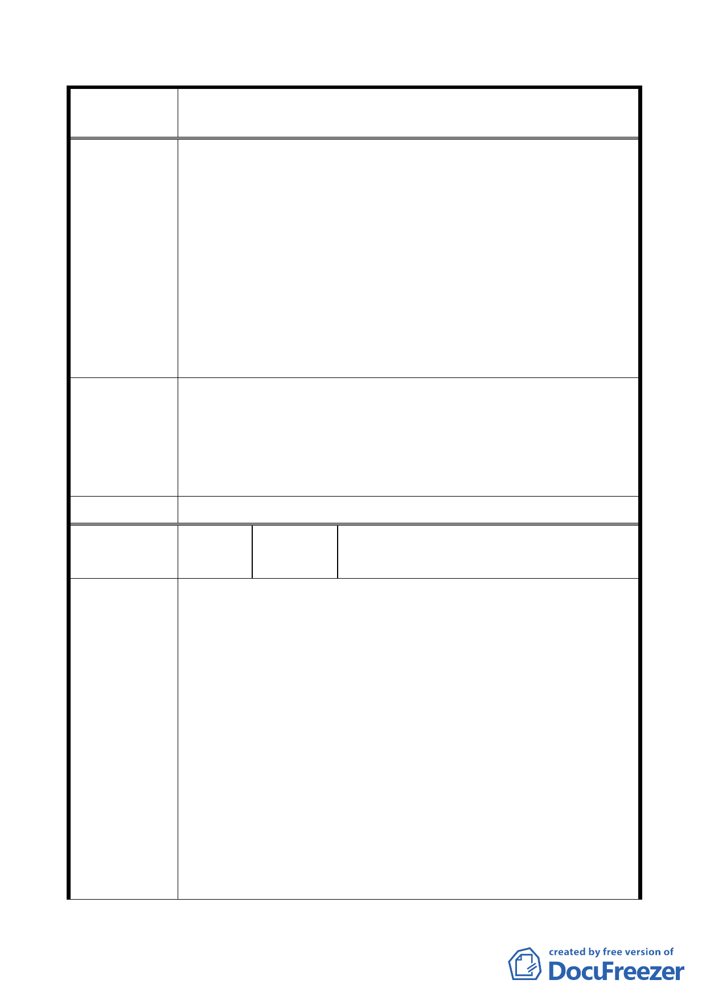

修訂本市都市計畫「臺北市山坡地開發建築要點」為「臺北市
案 名 都市計畫劃定山坡地開發建築管制規定」案
說 明 位於山限區之計畫道路係供山坡地社區使用為主，基於整體
開發與使用者付費原則，未開闢計畫道路部分應由毗鄰住宅
區基地併同開發，以兼顧未開闢計畫道路土地所有權人權
益，並避免申請者將開發成本外部化。
2.實務上，目前山限區之開發建築申請案於本市都市設計及土
地使用開發許可審議委員會審議時，本府皆要求申請者須協
助開闢臨接之計畫道路，申請者皆已配合辦理。另坡度較陡
之未開闢計畫道路部分，實際道路開闢型式與寬度等，建議
併同建築規劃設計案，由上開委員會委員整體考量。
3.建議依修訂公展條文之規定辦理。
一、同「市府回應說明」。
專 案 小 組 二、修正條文第三條中「申請者應協助開闢完成」文字修正為
「申請者應自行開闢完成為原則」，並請將「供公眾通行」
審查意見
及「授權都市設計審議進行整體考量」兩項要件一併納入
正式條文。
委 員 會 決 議 同「專案小組審查意見」。
台北市士林區住六-六自辦市地重劃區
編 號 2 陳情人
重劃會
一、經詳閱旨揭公展之條文內容，部分未趨周延及百姓無法遵
循利用，茲詳述如下：
（一）貴府目前正強力執行都市計畫使用規則（如師大夜市…
等），故旨揭山坡地開發建築地區屬都市計畫使用規則
那一類，應明確述明，俾百姓知悉遵循利用。
（二）依旨揭修正條文【（開發建築限制之規定）二、開發區
域內原自然地形平均坡度超過百分之三十者，除水土保
陳情理由
持設施外，不得作為建築使用，亦不得計入建築基地面
積檢討建蔽率與容積率，但得計入開發範圍。民國 88
年 6 月 7 日前已完成市地重劃及區段徵收地區，不在此
限。】 上述條文規定：民國 88 年 6 月 7 日前已完成
市地重劃及區段徵收地區，不在此限。 唯市地重劃與區
段徵收係依據平均地權條例規定辦理，且與 貴府訂定之
旨揭山坡地開發建築管制要點之目的完全不同，如：開
發方式、作業程序、公共設施配置、地主負擔… 等完全
- 13 -